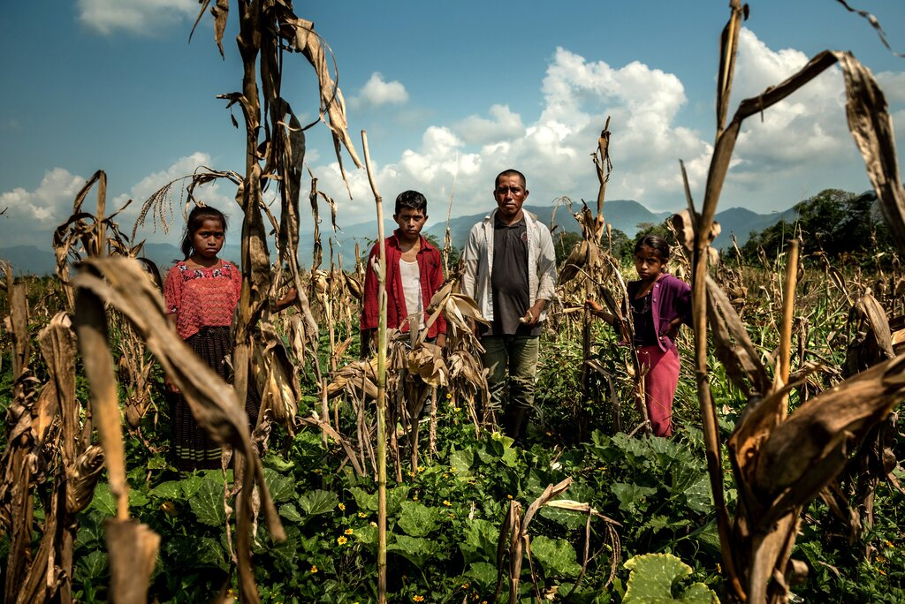
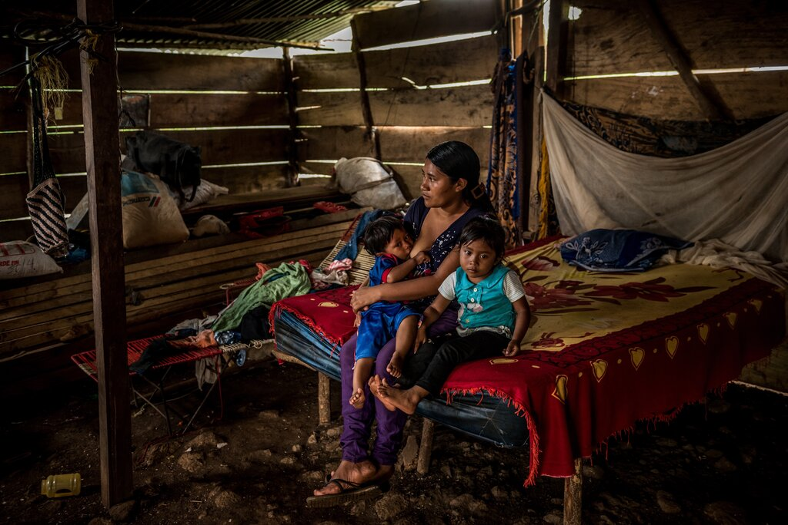

THE GREAT CLIMATE MIGRATION
By Abrahm Lustgarten | Photographs by Meridith Kohut
 ALTA VERAPAZ, GUATEMALA. Carlos Tiul, an Indigenous farmer whose maize crop has failed, with his children.Early in 2019, a year before the world shut its borders completely, Jorge A. knew he had to get out of Guatemala. The land was turning against him. For five years, it almost never rained. Then it did rain, and Jorge rushed his last seeds into the ground. The corn sprouted into healthy green stalks, and there was hope — until, without warning, the river flooded. Jorge waded chest-deep into his fields searching in vain for cobs he could still eat. Soon he made a last desperate bet, signing away the tin-roof hut where he lived with his wife and three children against a $1,500 advance in okra seed. But after the flood, the rain stopped again, and everything died. Jorge knew then that if he didn’t get out of Guatemala, his family might die, too.
This article, the first in a series on global climate migration, is a partnership between ProPublica and The New York Times Magazine, with support from the Pulitzer Center. Read more about the data project that underlies the reporting.
Even as hundreds of thousands of Guatemalans fled north toward the United States in recent years, in Jorge’s region — a state called Alta Verapaz, where precipitous mountains covered in coffee plantations and dense, dry forest give way to broader gentle valleys — the residents have largely stayed. Now, though, under a relentless confluence of drought, flood, bankruptcy and starvation, they, too, have begun to leave. Almost everyone here experiences some degree of uncertainty about where their next meal will come from. Half the children are chronically hungry, and many are short for their age, with weak bones and bloated bellies. Their families are all facing the same excruciating decision that confronted Jorge.
 ALTA VERAPAZ. Jorge A.’s wife, Eva María H., at home with two of their children.For most of human history, people have lived within a surprisingly narrow range of temperatures, in the places where the climate supported abundant food production. But as the planet warms, that band is suddenly shifting north. According to a pathbreaking recent study in the journal Proceedings of the National Academy of Sciences, the planet could see a greater temperature increase in the next 50 years than it did in the last 6,000 years combined. By 2070, the kind of extremely hot zones, like in the Sahara, that now cover less than 1 percent of the earth’s land surface could cover nearly a fifth of the land, potentially placing one of every three people alive outside the climate niche where humans have thrived for thousands of years. Many will dig in, suffering through heat, hunger and political chaos, but others will be forced to move on. A 2017 study in Science Advances found that by 2100, temperatures could rise to the point that just going outside for a few hours in some places, including parts of India and Eastern China, “will result in death even for the fittest of humans.”